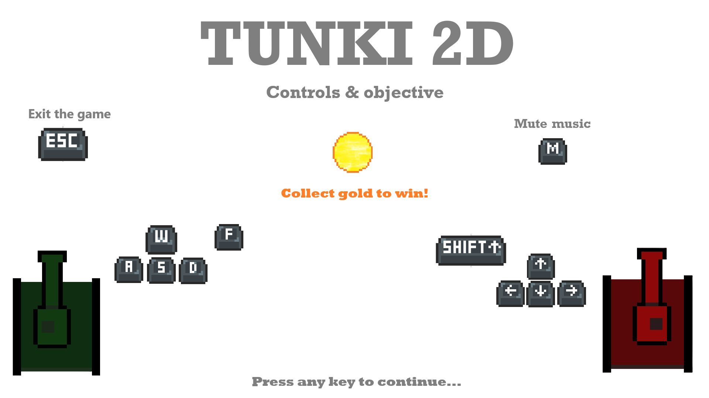
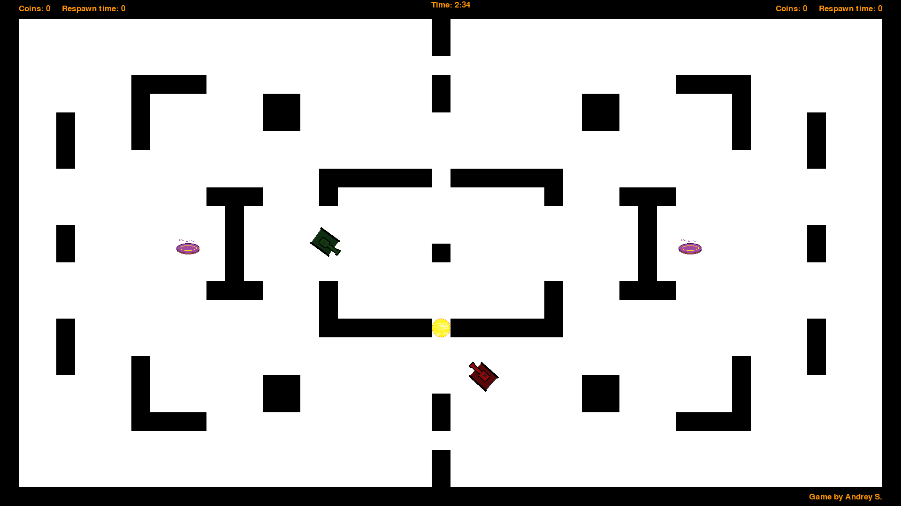
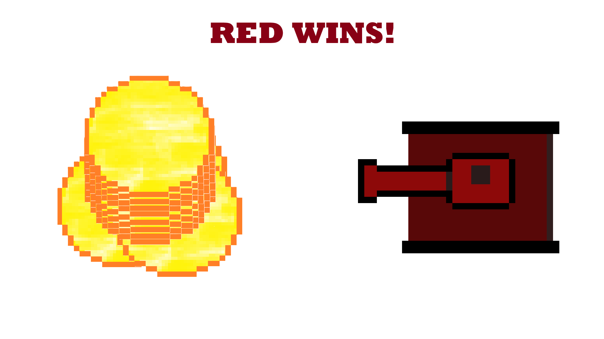
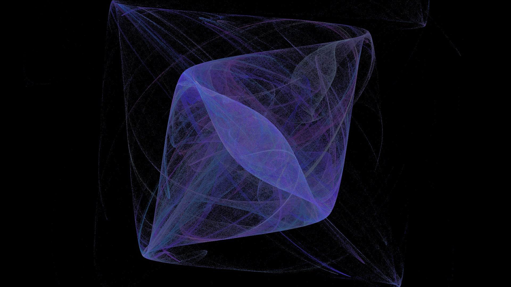
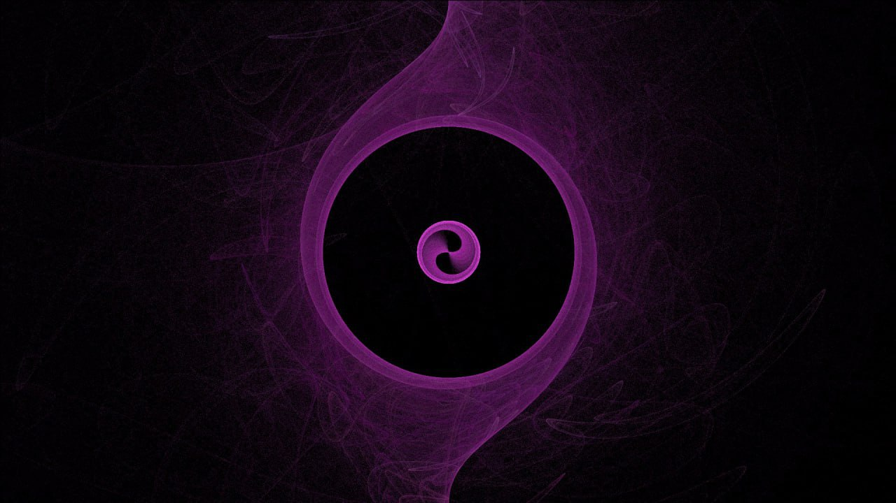
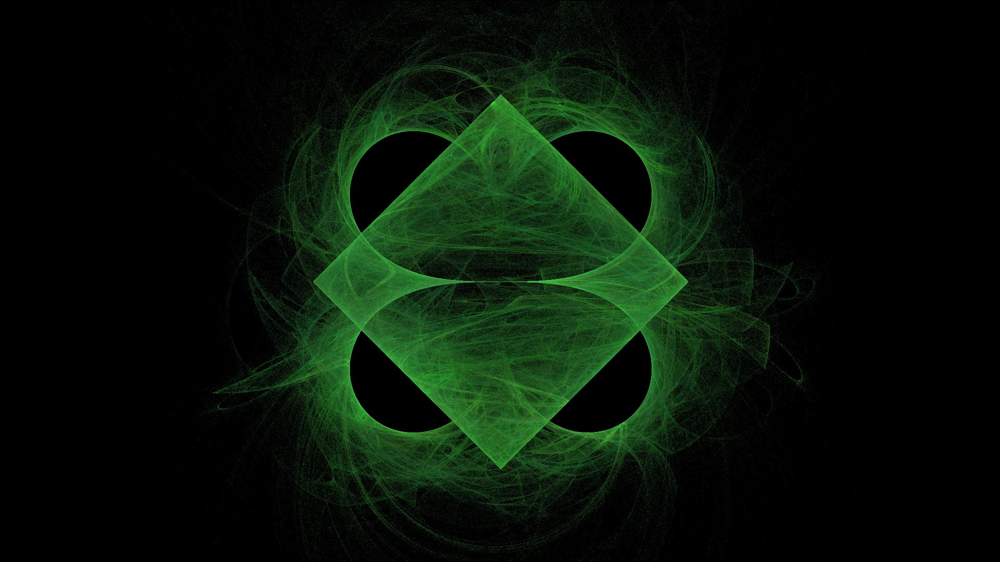
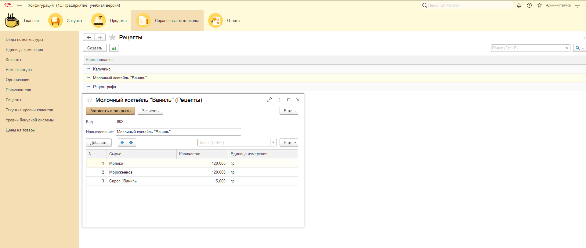

Студенческое портфолио
Суркова Андрея Анатольевича
В данном портфолио представлены работы студента за все время обучения.
Вы можете ознакомиться с дисциплинами, используя верхнее меню для навигации по иерархической структуре сайта. Каждый семестр содержит перечень дисциплин. Для дисциплин, изучавшихся на протяжении нескольких семестров, предусмотрены ссылки на соответствующие подстраницы.
Значимые работы:
Танковая аркада
В рамках дисциплины "Математические основы компьютерной графики" была разработана танковая аркада в формате Shared Screen PvP.
Ниже представлены скриншоты из игры:



Игровые и технические особенности:
- Игра была разработана на движке Pygame.
- Для победы в игре необходимо собрать больше "монеток", чем ваш соперник за отведенное время.
- Выстрелы танков отражаются от стен, что является отличительной особенностью игры.
- Танк может быть уничтожен вражеским или собственным снарядом. После уничтожения, танк пропадает с карты на небольшой промежуток времени, после чего появляется в одном из углов карты.
- На карте присутствуют два связанных между собой телепорта, что ускоряет передвижение игроков, повышает динамику игры и открывает возможности для тактических маневров.
- При желании, пользователи могут изменить ландшафт карты при помощи любого растрового редактора изображений.
Материалы:
Страница игры на сайте itch.io
Генератор изображений "Фрактального пламени"
Генератор изображений "Фрактального пламени" был разработан в рамках курсовой работы по дисциплине «Технологии компьютерного моделирования».
Некоторые из результатов работы генератора представлены ниже:



Технические особенности:
- Программа написана на языке программирования Java
- Генератор может быть запущен локально или при помощи telegram-бота
- Генератор позволяет выбрать цветовую гамму, масштаб и яркость изображения.
- Генератор позволяет выбирать и комбинировать различные нелинейные преобразования, определяющие характер изображения. Сочетание этих преобразований дает возможность экспериментировать и создавать множество уникальных изображений.
Материалы:
Инструкция и файлы для развертывания telegram-бота
Инструкция и файлы для локального запуска
Система автоматизации работы кофейни
В рамках дисциплины «Управление программными проектами» была разработана 1С-система для автоматизации работы виртуальной кофейни.
Скриншот одного из разделов системы представлен ниже.

Особенности:
Система разработана в команде, где я занимал роль руководителя, а также принимал участие в написании кода.
Система автоматизации разработана с использованием учебной версии платформы 1С:Предприятие.
Система позволяет вести учёт остатков номенклатуры на складе, создавать продукцию по техническим картам (рецептам), вести учёт продаж и закупок, а также формировать отчёты.
Для системы был написан ряд документов, соответствующих стандартам PMBOK 5.